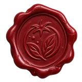
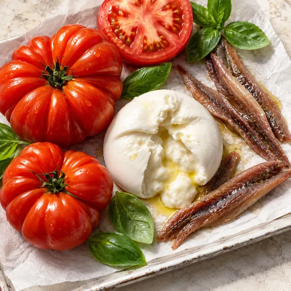
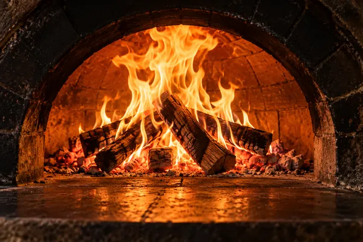
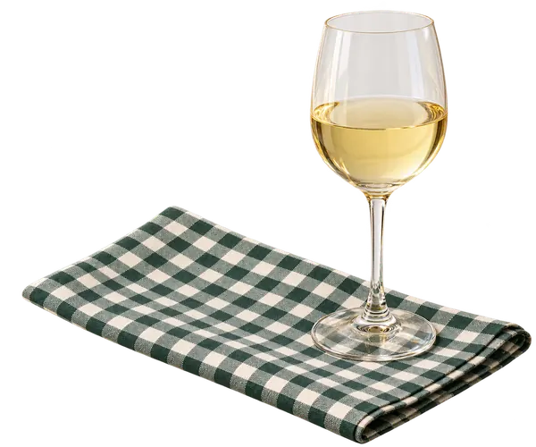

Pizzaria & Forneria Artesanal
editorial paper

FERMENTAZIONE 48H
EXTRA VIRGEM // MOLHO CASEIRO
CRUST CRUST ALCHEMY
48 horas
fermentação lenta da massa // farinha especial
fermentação paciente ➔
MATÉRIA-PRIMA PURA

ingredientes nobres
MATÉRIA-PRIMA PURA
NO COMPROMISE

FORNO & TEMPO
